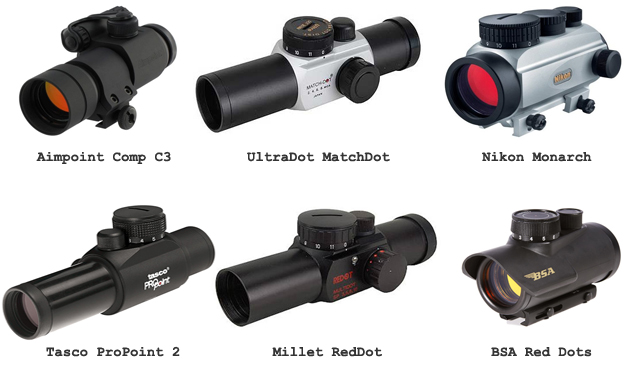
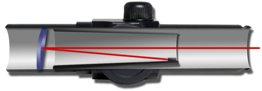
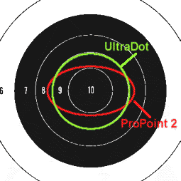
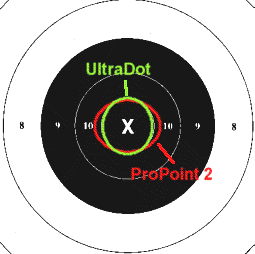
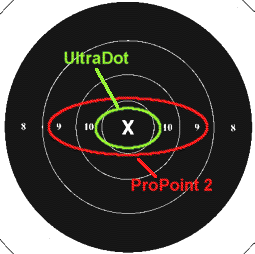
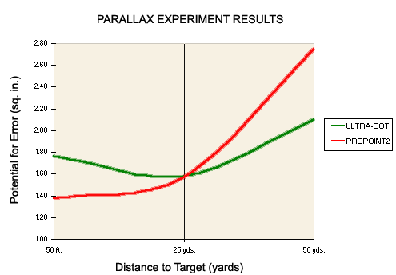
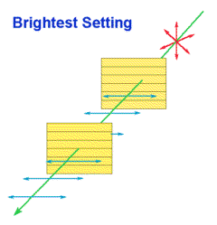
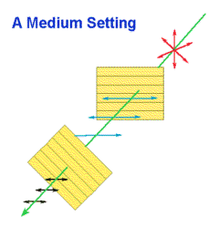
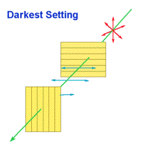

The red dot sight is possibly the greatest innovation in competitive pistol shooting in over one-hundred years! This gadget offers the sighting process a level of precision and a simplicity of operation that cannot exist with open iron sights. It also has allowed shooters with failing eyesight to either return to the sport or to stay competitive for much longer.
This article is NOT a product review. It is intended to educate competitive shooters about the principles and characteristics of differing makes and models of red dot sights.
A History of the Dot Sight
The tradition of utilizing open iron sights in bullseye was first challenged with the introduction of the "Bullseye Pistol Scope" by Burris in the 1960s. It featured either no magnification or 1.7x for "hard holders" and a innovative reticle that exchanged traditional crosshairs for a big black dot. Sold for decades by Gil Hebard, it was quite popular on the firing lines, despite being not only quite heavy, but also problematic in low-light situations. When the Swedish firm Aimpoint broke into the scene in 1975 with their original model the "Electronic," it would not be long before the bullseye game would be changed forever.
With any innovation comes imitation. The original UltraDots were mediocre copies of the high-priced Aimpoint sights and quickly gained popularity among shooters in the late 1980s because they were affordable. But it was probably the offering by the Florida-based Tasco company of the very affordable and well-made Japanese sight called the ProPoint that made the biggest impact on the dot sight market. A decade later, there would be dot sights of all shapes and sizes being manufactured by different companies all over the world.
A Myriad of Models and Claims
While dot sights come in both "tube" and "open" designs, the tube type is superior for the bullseye game. Durability, superior zero-holding, fewer stray reflections and better mounting options are just a few of the reasons.
While the objective lens (tube diameter) of sights range from 25mm (or 1 inch) all the way up to 54mm, anything larger that 25mm may be nothing more than an unnecessary addition of weight. Also, the larger the tube diameter, there is a greater potential for off-axis parallax error as well. Highever, some shooters feel that they can acquire the target after recoil in sustained fire more easily with the slightly larger 30mm sight.
Here are some images of a few of the popular dot sights currently available on the market.

The Mechanics of a Dot Sight
Understanding how a dot sight works is important in determining why dot sights behave the way that they do.

There is nothing magical about them; the system is actually quite simple. The sight includes a concave lens with an extremely thin metallic coating that reflects red light but transmits other colors freely. The "dot" reticle itself is simply a reflection of a light emitting diode mounted inside the sight tube. The result is a red dot that appears as if it is "projected" upon the target as you look through the tube. To make sight (point-of impact) adjustments, two screws that work opposite of coil springs adjust elevation and windage by moving the inner tube with the LED either horizontally or vertically.
Dot Pitch or Size
It is unfortunate, but expected, that a manufacturer's purported specifications on the "size" of their dot is seldom correct. The dot size, usually reported in minutes of angle, is often pure hogwash. While most dot sights are advertised as having 3 or 4 minute dots, only your eyes can tell you what size they really are. For example, the Aimpoint 5000 and the Tasco Pro Point 2 have smaller dots than basic UltraDots, and yet they all claim to have the same size dot!
The new flavor of the month in dot sights is adjustable dot sizes and even reticle shapes. I would suggest dismissing the idea that there is any better reticle shape than the simple dot. However, an adjustable dot size may possibly be an advantage. A historical example is that the black reticle of the ancient Burris scopes were larger than typical red dots. Many shooters reported that a larger round reticle made sight picture and target acquisition easier and wobble more manageable. Today, with adjustable dot sizes, some shooters are changing the dot size larger as they move from slow to sustained fire. Others, who suffer from astigmatism, find that a larger dot appears more round and exact than a smaller one.
The Dot is Not Truly Focused at Infinity
One popular fallacy that is commonly believed is that the dot itself is focused, or projected, at the same apparent distance as the target. By doing tests on four different models of sights, it has become quite apparent that this is NOT the case. With the aid of a SLR camera with a rangefinder focusing screen, by viewing the dot with 24 inches of eye relief, it becomes obvious that the dots on all four models are "focused" anywhere between 30 and 75 feet, regardless of the distance of the target. This distance is the sight's "sweet spot" and likely where it will perform best against off-center parallax, discussed next.
Parallax is an Issue with All Dot Sights
The most popular misconception about dot sights is that some models are blessed with complete freedom from parallax. Nonsense! Parallax exists in all dot sights because of the nature of the sight design itself. While it is true that all sights do adjust for off-center parallax at particular distances, they become more vulnerable to the problem at other distances.
What exactly is parallax? Parallax is the "error" that occurs when one of two vectors that are parallel is used as a reference for the other. This is a factor with a dot sight because its reflecting lens is optimized for reflecting the image of the LED right down the center of the tube into your eye. If the pistol is held incorrectly and the shooter views the dot near the edge of the tube, it will not actually be pointed at the actual correct point of aim. In an attempt to correct for this, the reflecting lens is concave. Unfortunately this design is only somewhat effective.
The following experiment analyzes this phenomenon of parallax at varying distances with our two test sights. The sights were mounted to a stable bench and pointed toward a special calibrated target placed at three different distances. While maintaining a consistent 24" eye relief, and keeping one eye closed, I moved my viewing eye to the left/right and top/bottom extremes that the dot was still visible, and charted my observations. The data was recorded as the measured point on the calibrated target at each viewing "extreme" where the dot appeared to actually be. All target coordinates are based on the location of the CENTER of the dot reticle since the two test sights have different sized dots.
Before continuing, let me assure you that slight off-center viewing with either model resulted in imperceptible errors. If a shooter keeps a consistent rock-solid hold for every shot, parallax will not be as much of a concern. But nonetheless, knowledge of the great POTENTIAL for error is useful and reinforces the values of good technique.
The next three figures demonstrate the maximum potential for parallax with our two test sights as mapped upon the standard target for those three common shooting distances. The circles represent the greatest possible error resulting from parallax alone for each model. As you will see, each model is designed and acts much differently at various distances to the target.
 |
At fifty feet, the UltraDot can vary as much as 0.75" off-center. The ProPoint2 can vary as much as 0.875" horizontally and 0.50" vertically. Both models perform effectively at their worst at this distance. |
| At 25 yards, both models perform effectively very well. Neither would distort the image so much that the actual point of impact would score outside of the X-ring of the timed and rapid fire target. |  |
 |
At fifty yards, the two models again demonstrate their big design differences. The UltraDot at maximum error will still pretty much hold the X-ring. The ProPoint 2 is plagued with errors up to 2.50" horizontally and 0.875" vertically. |
To better compare the two sights, I charted these findings below as the "potential of error" for the sights at each distance. This figure was computed by calculating the area of the "circles" above. The results are perhaps deceiving, but demonstrate how different the two sights are designed.

The Function and Mechanics of the Polarizing Filter
The most useful accessory supplied with a dot sight is the polarizing filter. Attached to the far end of the sight, it functions as a variable light filter to adjust the brightness of the target independent of the dot intensity. It is most valuable on a very bright sunny day.
The accessory is actually a set of two polarizing filters that rotate independently of one another. Each of the two filters is a sheet of transparent plastic with microscopic parallel lines etched upon it. These lines act to reduce the amplitude of light waves that arrive to the filter vibrating in directions other than that of the lines. The best image I could dream up to illustrate this is to imagine having to get a sheet of plywood through a wrought iron fence. Any attempt to get the sheet through other than with the plywood PARALLEL to the fence bars is fruitless, and the plywood bounces back. But the plywood still will get through that fence IN ITS ENTIRETY when it is turned the correct way. This is the same principle with light rays passing through a single polarizing filter.
Now let's add the second filter. Since it rotates independently, its lines can be parallel, perpendicular, or any angle between in relation to the first filter. Now back to the image of the iron fence, let's place another fence section behind the first. If the bars on each are parallel, that entire sheet of plywood will still pass through. If you tilt the rear fence section a little bit, you'll have to cut off some of the plywood to get it to go. As you tilt the rear fence section closer to perpendicular of the first, the plywood will have to be trimmed more and more. This is how the second polarizing filter works in conjunction with the first to reduce the amplitude of light waves.
 |
Here you can see how light waves vibrating with any amplitude can pass through two parallel polarizing filters. This is the most transparent that the filter unit will become. |
 |
When the second filter is turned 45 degrees, light waves of greater amplitude than the reduced "openings" are blocked. Waves of lesser amplitude are allowed to pass freely. |
 |
Now that the polarizing lines are perpendicular to each other, only light waves with extremely small amplitude are allowed to pass. The filter unit will appear almost opaque. |
In Conclusion
I hope that any doubts or misconceptions about red dot sights have been resolved with this article.
Before rushing out to purchase any dot sight, I suggest that you gaze through it to see if it meets your needs. In regards to quality control and longevity, one standard is fairly clear - avoid any brand or model that is manufactured in China.
On a positive note, in this game of bullseye shooting, I have seen more military shooters over the past 15 years at all of the big matches using the basic UltraDot model than any other sight - and without question, these guys are truly the pros of the sport.